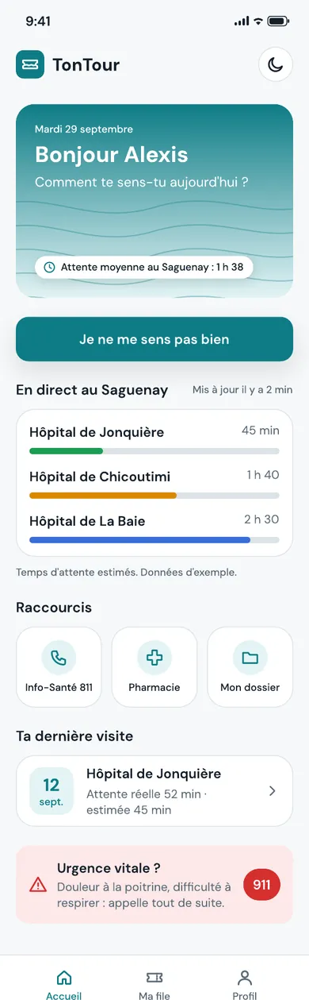
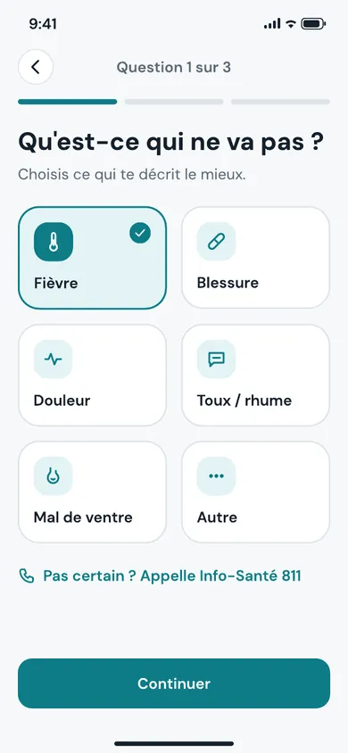
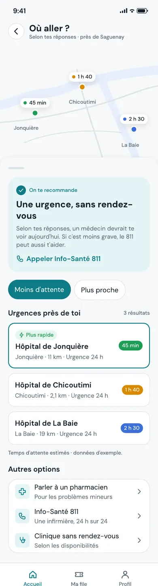
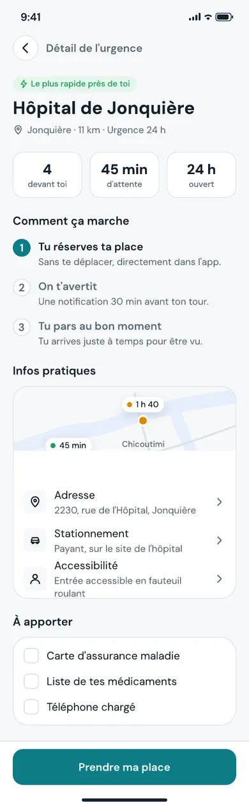
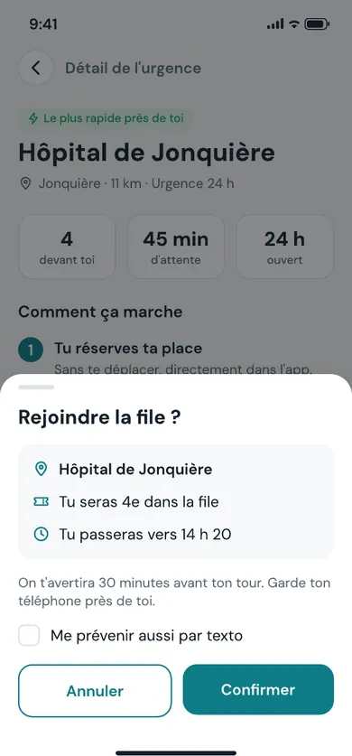
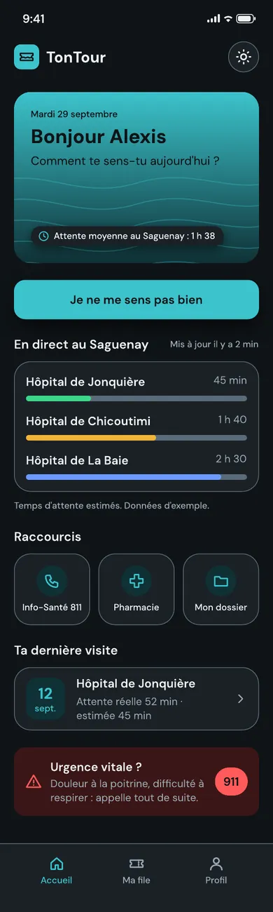
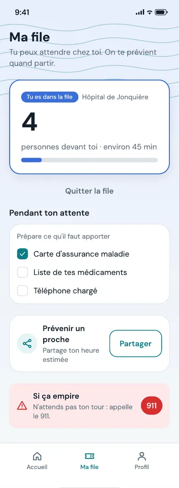
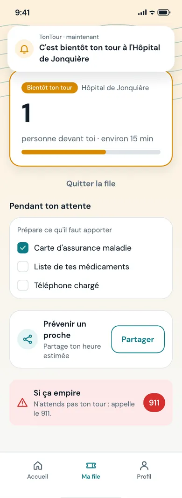
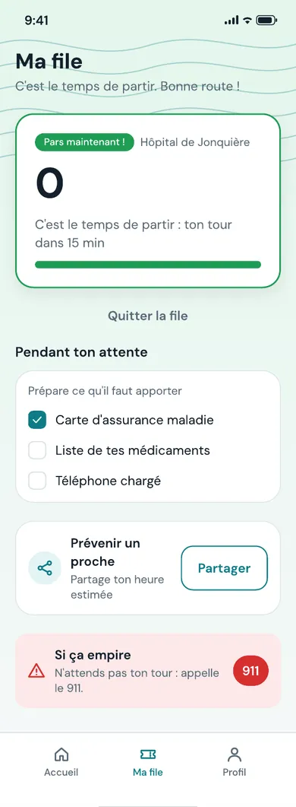

Projet 04 · Automne 2026 · Projet de session
TonTour
Concept d’app mobile (UI/UX) de file d’attente virtuelle pour les urgences du Saguenay.
- Web
Mon rôle
Seul, en une semaine, dans le cours Outils de performance web : système de composants, 11 écrans, prototype.
Outils
- Figma
Côté coulisses
-
Brief
Un défi Figma d’une semaine. L’idée que j’ai choisie : une file d’attente virtuelle pour les urgences.

L’accueil -
Plan
Le parcours de l’usager. Trois questions (symptôme, depuis quand, intensité), puis les urgences de Jonquière, Chicoutimi et La Baie avec leur temps d’attente. L’usager prend sa place et suit son « billet de file » : loin, bientôt, pars, itinéraire. L’app renvoie aussi vers Info-Santé 811, une pharmacie, une clinique sans rendez-vous et le 911.

Question 1 sur 3 
Où aller ? -
Production
Un système de composants avec variantes et états (boutons, formulaires, cartes, navigation, superpositions, carte du Saguenay, logo, 36 icônes, billet de file). 11 écrans et 4 superpositions, en mode clair et sombre. Un prototype avec transitions automatiques.

Le détail d’une urgence 
Une superposition 
Le mode sombre -
Résultat
Un parcours complet, du premier écran à l’itinéraire.

Le billet de file : loin 
Le billet : bientôt 
Le billet : pars
Ce que j'ai appris
Ce projet m’a appris à maîtriser Figma.
Concept réalisé dans un cadre scolaire. Ce n’est pas un service réel.